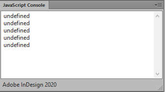
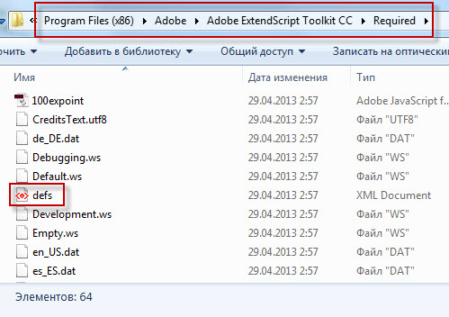
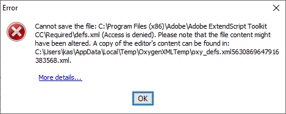
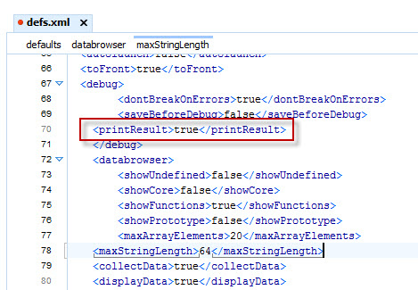
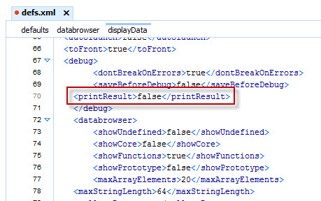
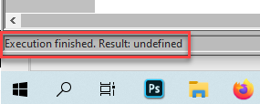

How to get rid of the pesky ‘undefined’ message in ESTK’s console
By default, every time you run a script in ESTK, the ‘undefined’ message is written in the console which means the result of the script’s execution.

I don’t see any use of it: in my opinion, it just clutters up the console. However, there’s an easy way to get rid of it by editing the preferences template file defs.xml. The file is located here:
In Windows: [Program Files (x86)]\Adobe\Adobe ExtendScript Toolkit CC\Required\defs.xml
In Mac OS: In /Applications/Utilities/Adobe ExtendScript Toolkit CC.app, control-click the application icon and select “Show Package Contents” to open the package. The file is located here:
Contents/SharedSupport/Required/defs.xml

Before editing, copy it, say, to your desktop, and edit the copy. Otherwise, the system won't allow you to save it in the original location giving an error message like so:

Also, you may want to make a backup of this file just in case.
Now open the file in a plain text editor (e.g. Notepad or TextEdit) and find the <printResult> tag

Change the value from true to false

Finally, save and move it back to the original location replacing the original.
After editing the file, start the ESTK while holding the Shift key down. This reverts to the default preferences by loading this file. Note that this also removes any keyboard shortcuts, favorites, and so on, that you have set.
By the way, you can still see the result in the left bottom corner:
